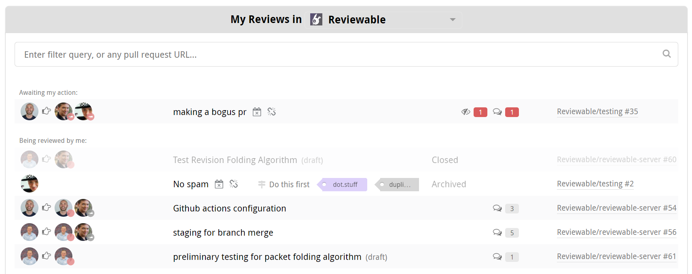
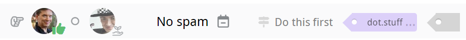
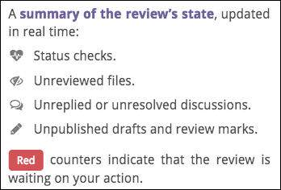
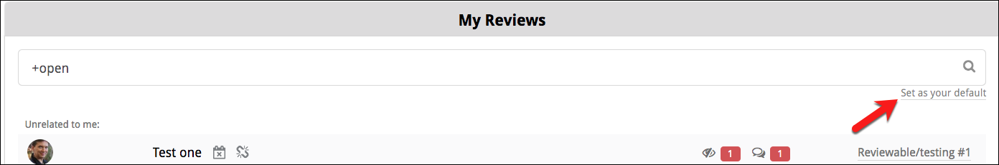
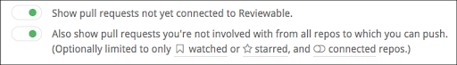

Reviews dashboard
Click the Reviews button at the very top of the page to display the reviews list. Here, you'll find all open pull requests in which you are a participant. As a participant, these PRs have either been created by you, assigned to you, contain comments from you, or mention you (or a team you belong to). Reviewable automatically updates this list at least once per minute (and data held in Reviewable is updated in real time), so there's no need to reload the page.
If PRs appear to be missing from the list, try clicking the Include stalled pull requests/reviews link at the bottom of the panel. You may also want to click the green Also show team reviews or Also show private reviews buttons at the bottom if they're showing and you haven't yet granted those permissions. Finally, if PRs are still missing, check whether the relevant organizations have OAuth app access restrictions turned on.

PRs are sorted into groups ordered from most to least relevant. Within each group, PRs are sorted in chronological order. The exception is that in the Waiting on me group, the PRs that are only waiting on you appear before others. The intention is that the PRs appear in the order you ought to deal with them. You cannot change the sort order, but you can filter the list instead (see below for details).
You can constrain the list to a specific organization by selecting it from the dropdown menu in the panel's header. Your selection will be automatically saved for future visits. You can also view all of the PRs in a specific repository by clicking one of the “N open reviews” links on the Repository page.
Loading the list of reviews for a single organization or repository will be much faster than doing so for all your repositories.
You can further modify the view with the various toggles and filters on this page. If a specific pull request isn't showing in the list, you can simply paste its URL into the filter field to access it directly.
Up to three closed PRs from the previous three days may also be shown here. This makes it easier to follow-up on recently completed reviews. Enter +open in the search bar to hide the closed PRs. To show older closed PRs click Show more concluded reviews at the bottom of the panel, repeating as necessary.
Review state
Each review in the listing indicates the state of the review, in more-or-less real time. The author of the PR is shown first. People whose attention the review currently needs are show to the right of the , while other participants follow the . You can see the approval status for each reviewer ( approved or changes requested), as well as the pull request summary, current milestone, and labels (if any).

The icon indicates that the repository for this PR is not connected to Reviewable and the review will update on demand only. In such cases, the counters may be out of date. An administrator can connect the repository from the Repository page.
A icon indicates a stalled review that has not been updated in over two weeks.
Counter reflect the same information as you'll see on the review page:

If a PR is ready for merging, the status checks are successful, and all the counters are zero, then a merge button appears in the state column instead. This lets you quickly merge completed PRs but doesn't give access to merge options — for that, please open the review page.
Other possible states include Merged, Closed, and Archived (automatically, for old reviews — just open to unarchive). No state appears for any PR not yet connected to a review.
Open a review
Click on a PR to open the review, or hold down the appropriate modifier key to open it in a new tab. If a is shown, clicking on the listing will open a new review and insert a link into the description for the PR. If is also shown, this may begin a free trial.
Click the link on the right end of a listing to access the pull request on GitHub.
Filter reviews
In the filter field, enter one or more terms to match in the PR summary, repository, number, milestone, labels, author username, or blocking reviewer. The query is immediately reflected in the URL if you'd like to bookmark it.
You can also use the special filters in the table below, adding either a + or - prefix to the special term (such as +open) to require or prohibit the specified condition respectively.
Add an OR operator to the positive filter by entering a comma. For example, +needs:review,needs:fix will filter for all reviews that need work, or have a failing check. For negative filters, the comma functions as an AND operator. More complex boolean expressions are not supported.
For the ±label:name filter, you must use double quotes around the label name if it contains spaces.
| Filter | Meaning |
|---|---|
±open | Currently open PR |
±red | PRs with red counters |
±deferred | PRs with deferred counters |
±mine | Created, assigned, and requested PRs |
±label:name | PRs with given label |
±needs: | |
review | Incomplete reviews |
fix | Reviews with failing checks |
merge | Completed and clean reviews |
me | Reviews waiting on you |
author | Reviews waiting on author |
reviewer | Reviews waiting on a reviewer |
±am: | |
author | Created PRs |
assigned | Assigned PRs |
requested | Requested reviewer PRs |
±draft | PR draft, not yet fully open |
±merged | PR that was successfully merged |
±closed | PR that was closed without merging |
±public | PRs from public repos |
±private | PRs from private repos |
±starred | PRs from repos you starred |
±watched | PRs from repos you're watching |
Click the small Set as your default link to set the query that will automatically be applied when you load the page.

If shown, you can click the Include stalled pull requests/reviews link near the bottom of the panel to exclude or include any stalled PRs. The current state of this toggle is reflected in the URL, so you can bookmark it.
Other toggles
At the bottom of the Reviews page, you’ll find two toggle buttons:

Show pull request not yet connected to Reviewable
If this toggle is on, the list will include PRs for which a review has not yet been created. Such a PR will be indicated with the , and clicking that PR will connect that PR to a review and insert a link into the PR description.
You may want to turn off this toggle if you only want to see PRs from connected repositories.
Also show pull request you’re not involved with from all repos to which you can push.
If this toggle is on, the list includes all open PRs from repos where you have commit privileges, even if you're not a participant. This is useful if you need to monitor repos for incoming PRs, such as if you're a manager, or an admin on an open source project.
Optionally, you can restrict this set of repos to only those repos connected to Reviewable, or that you watched or starred on GitHub. This can be useful if you have push permissions to a lot of repos and, for example, you don’t want to see random open source repos while at work.